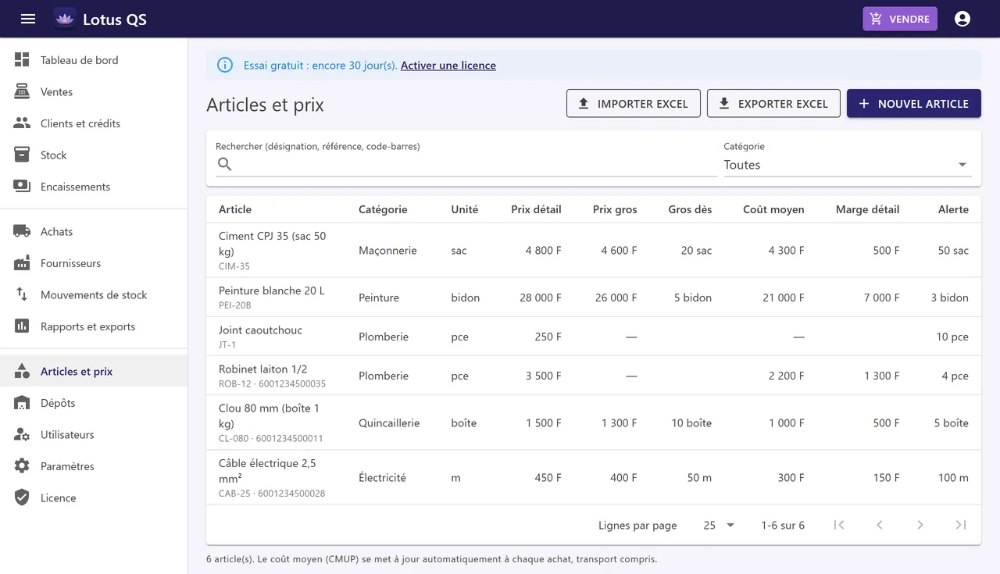
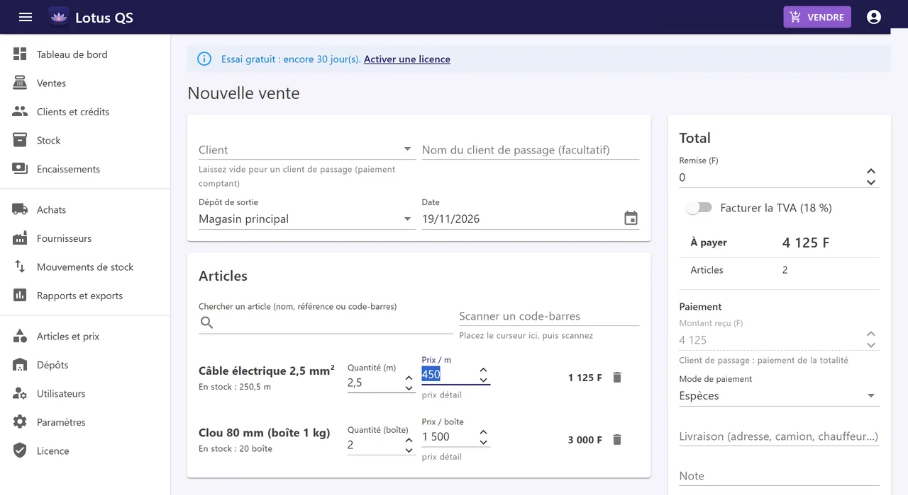

Qu'est-ce qui vous complique le plus la quincaillerie ?
Touchez le vôtre. Un message WhatsApp s'ouvre déjà rempli : vous n'avez plus qu'à ajouter votre quartier.
Je ne sais pas ce qui va manquer
Un client demande un article, le rayon est vide. Vous le découvrez devant lui, et vous perdez la vente.
Je vends au mètre, au kilo, à la pièce
Deux mètres et demi de câble, un kilo de clous, trois robinets. Votre cahier ne sait pas compter les décimales.
J'ai des centaines d'articles à saisir
Retaper toute la quincaillerie prend des jours. Si la liste existe déjà dans Excel, elle peut entrer d'un coup.
Voilà ce que vous aurez sous les yeux
De vraies pages du logiciel. Les noms et les chiffres sont des données de test.
Chaque article, avec ses deux prix et sa marge
Référence, code-barres, catégorie, unité, prix détail, prix gros, coût moyen et marge. Le coût moyen se met à jour tout seul à chaque achat, transport compris. Vous importez ou exportez la liste avec Excel.

Une vente en quelques secondes, au mètre ou à la pièce
Vous cherchez l'article ou vous scannez son code-barres. La quantité accepte les décimales : 2,5 mètres de câble, 2 boîtes de clous. Le stock restant s'affiche sous chaque ligne, et le total se calcule seul.

30 jours gratuits, puis la clé
Vous essayez avec vos vrais articles et vos vraies ventes.
- Jour 1Je viens, j'installe, j'importeJ'installe Lotus QS sur l'ordinateur de la quincaillerie. J'importe votre liste d'articles avec le stock de départ, et je forme votre vendeur à la vente et au scan.
- Semaine 1Chaque vente compteChaque vente et chaque achat met le stock à jour. Le soir, vous ouvrez le tableau de bord : ventes du jour, argent encaissé, crédits clients, articles en stock bas.
- Jour 30Vous demandez la cléDans le menu Licence, copiez le code de votre ordinateur et envoyez-le moi sur WhatsApp. Je vous réponds avec la clé. Vous la collez, vous cliquez sur Activer, et vous continuez.
Écrivez-moi votre quartier : je vous dis quand je peux venir.
Tout ce que contient Lotus QS
Une quincaillerie ne travaille pas comme un dépôt de ciment. Beaucoup d'articles, des références, des quantités qui ne tombent pas toujours juste : chaque fonction vient de là.
Prix détail et prix gros
Chaque article a un prix détail, un prix de gros et la quantité à partir de laquelle le gros s'applique. Le bon prix se met seul à la vente.
Vente au mètre, au kilo, à la pièce
Câble au mètre, clous au kilo, robinets à la pièce. Les quantités peuvent avoir des décimales, arrondies à trois chiffres.
Recherche sans accent et scan de code-barres
Tapez « robinet » ou « ROBINET », avec ou sans accent. Avec un lecteur de code-barres, vous scannez et l'article s'ajoute à la vente.
Facture PDF avec le montant en lettres
Une facture avec le client, les quantités, ce qui est payé et ce qui reste à payer. Prête à imprimer ou à envoyer.
Vente comptant ou à crédit
Le client paie tout de suite ou prend à crédit. Dans le second cas, la dette apparaît sur sa fiche, avec un plafond de crédit.
TVA, remise et livraison
La TVA de 18 % s'ajoute d'un clic quand il en faut une. Vous pouvez faire une remise et noter l'adresse ou le camion de livraison.
Fiche article complète
Désignation, référence, code-barres, catégorie, unité, seuil d'alerte. Vingt-deux catégories de quincaillerie sont proposées, et vous pouvez écrire les vôtres.
Import et export Excel
Vous avez déjà votre liste d'articles dans Excel ? Vous l'importez avec le stock de départ. Vous pouvez aussi tout exporter pour votre comptable.
Achats, fournisseurs et coût moyen
À chaque achat, le transport est réparti et le coût moyen est recalculé. Vous voyez ce que vous devez à chaque fournisseur, et votre marge sur chaque article.
Plusieurs magasins, mouvements de stock, inventaire
Chaque magasin a son stock. Le stock est la somme des mouvements : achats, ventes, transferts, casse. Personne ne le tape à la main.
Alerte de stock bas
Le tableau de bord liste les articles passés sous leur seuil. Vous savez quoi commander avant que le rayon soit vide.
Comptes administrateur et vendeur, sauvegarde chaque jour
Chacun a son mot de passe. Une copie des données est faite chaque jour et les 30 dernières sont gardées.
Le cahier ou Excel, ou Lotus QS ?
Le cahier et Excel ont servi pendant des années. Voici ce qui change.
| Question | Cahier ou Excel | Lotus QS |
|---|---|---|
| Le stock d'un article | À recompter ou à recalculer | Calculé après chaque vente et chaque achat |
| Trouver un article | Feuilleter ou filtrer | Recherche sans accent, ou scan du code-barres |
| Vendre 2,5 m de câble | Calcul à la main | Quantité décimale, total automatique |
| Prix détail et prix gros | Deux colonnes à surveiller | Le bon prix s'applique selon la quantité |
| Ce qui va manquer | Vous le découvrez devant le client | Liste des articles sous leur seuil |
| La facture | À écrire à la main | PDF avec le montant en lettres |
| Sans internet | Oui | Oui |
Ce que vous avez avec Lotus QS
- 30 jours d'essai complet, sans rien payer
- Installation chez vous, avec moi
- Votre liste d'articles importée avec le stock de départ
- Formation de votre vendeur
- Fonctionne sans internet
- Support par WhatsApp
- Une copie de vos données chaque jour
- Bilan à 30 jours avec moi, avant de décider
Retrouver une seule erreur de stock ou un seul crédit oublié peut déjà couvrir plusieurs mois de logiciel. Pendant l'essai, c'est ce que vous cherchez, sans rien risquer.
Puis un prix par ordinateur
Je veux l'essai gratuit (s'ouvre dans une nouvelle fenêtre)Le prix vous est donné sur WhatsApp, avant l'installation. Vous savez ce que vous paierez avant de commencer.
Je demande le prix (s'ouvre dans une nouvelle fenêtre)Vous ne payez que si vous continuez après l'essai.
Essayer ne coûte rien
Pendant 30 jours, Lotus QS est complet et gratuit. Si au bout de ce temps il ne vous a montré ni une erreur de stock, ni un article qui allait manquer, ni un client qui vous devait de l'argent sans que vous le sachiez, vous ne me demandez pas la clé et vous ne payez rien.
Les questions des gérants
Que se passe-t-il au bout de 30 jours ?
Un bandeau vous prévient. Dans le menu Licence, vous copiez le code de votre ordinateur et vous me l'envoyez sur WhatsApp. Je vous réponds avec une clé, vous la collez et vous cliquez sur Activer. La clé est liée à l'ordinateur du magasin.
Je ne sais pas l'installer tout seul.
Écrivez-moi sur WhatsApp : je viens chez vous, j'installe, j'importe votre liste d'articles et je forme votre vendeur.
J'ai des centaines d'articles. Je dois tout retaper ?
Non. Si vous avez une liste dans Excel, elle s'importe avec le stock de départ. Sinon, je vous prépare un fichier modèle à remplir.
Mon vendeur va refuser de s'en servir.
Je le forme chez vous devant son poste. Une vente se fait en cherchant l'article ou en le scannant, puis en validant. S'il se bloque, il m'écrit sur WhatsApp.
Il me faut un lecteur de code-barres ?
Non, ce n'est pas obligatoire. Sans lecteur, vous cherchez l'article par son nom ou sa référence. Si vous en avez un, vous scannez dans le champ prévu.
Et s'il n'y a pas d'internet ?
Lotus QS n'en a pas besoin. Vos ventes continuent, et vos données restent sur l'ordinateur du magasin.
Quel ordinateur me faut-il ?
Un ordinateur Windows dans la quincaillerie. Vos données restent dessus, pas sur internet.
Si mon ordinateur tombe en panne ?
Une copie de vos données est faite chaque jour. Elle se récupère sur un autre ordinateur, et je vous montre comment.
Si j'arrête de payer, je perds mes données ?
Non. Vos données restent sur votre ordinateur. Vous pouvez toujours les consulter, imprimer les factures et exporter vers Excel. Seules les nouvelles ventes, les nouveaux achats et les paiements ne s'enregistrent plus.
C'est quoi, la différence avec CimentStock ?
CimentStock est fait pour un dépôt de ciment : peu de produits, vendus en sacs et en tonnes. Lotus QS est fait pour une quincaillerie : beaucoup d'articles, des références, des codes-barres et des quantités au mètre ou au kilo.
Combien ça coûte ?
L'essai est gratuit pendant 30 jours. Ensuite, le prix se paie par ordinateur. Écrivez-moi sur WhatsApp, je vous le donne avant l'installation.
Chaque soir sans Lotus QS, vous ne savez pas.
Écrivez-moi votre quartier, je vous dis quand je viens.
Gratuit pendant 30 jours. Le prix vous est donné avant l'installation.